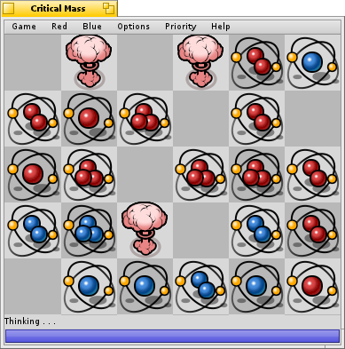
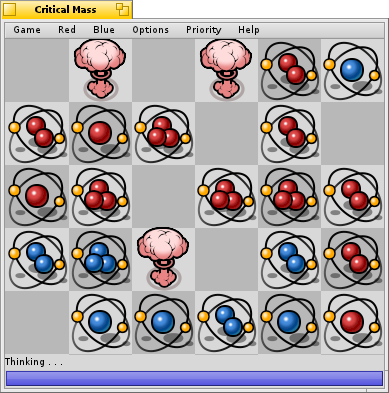
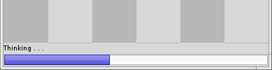
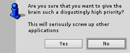

By Hamish Carr and Adrien Destugues
Come and blow some things up!
By Hamish Carr and Adrien Destugues
Come and blow some things up!
See the revision history for known bugs and todo list.
At the University of Manitoba, the second-year Computer Science class is often assigned a game as the major project for the Algorithms and Data Structures course. The aim of the exercise is to force the students to code a non-trivial, but manageable, project involving complex data structures.
When I took the course in 1996, Prof. Al Marshall assigned Critical Mass as the year's game, and provided us with a sample implementation that he had found on the web.
We were not expected to do a fully-fledged GUI. Some of us did anyway. In the process, I learned how to code a System 7-compliant application on the Mac.
When the name and the rules were described to me, I knew that my version had to involve nuclear physics, so I shanghaied J Waschuk into creating suitable artwork for the game. (Hey, the assignment was to code the game, not to draw the pieces!)
Later that same year, when Java was new on the block, some friends and I attempted to port Critical Mass to Java. We succeeded (mostly), but had severe problems making sure that the pictures and sounds loaded in the right sequence, and ended up with no very high opinion of Java (especially the 1.0 JDK).
When I started working on the BeOS, and registered as a developer, I decided to port Critical Mass to BeOS as an exercise in learning the BeOS API.
Eight months later, I completed it, and posted it to BeWare.
Rumour has it that, shortly thereafter, it was banned from Be's headquarters, due to it's addictive qualities. Whether that is true or not, quite a few people at the Spring Developers' Conference seemed to recognize it. :->
After some difficulty with resource formats, more difficulty finding a Pentium box to compile on, and lots of schoolwork, I have finally got round to compiling an Intel version, and documenting it.
While looking through the files in the BeOS Archive, I found a file called "Critical Mass". That looked quite intriguing, so I opened it and discovered a game that looked like fun. Unfortunately, it was a BeOS R3 application, and wouldn't run on a modern Haiku install. The source was included, however, so I decided to give the game a bit of my time and make it work on Haiku.
Turs out this game is highly addictive, and as I ended up playing it a lot, I decided to replace the graphics by vector ones, that I think look a lot nicer. Thanks to zuMi for drawing the nuclear explosion, since we didn't have any fitting icon in Haiku library. I hope you'll enjoy playing this game!
Deep in the heart of a nuclear reactor, a chain reaction is building. Two rare elements, stablium and unstablium, are being created. Your task, should you decide to accept it, is to make sure that only stablium (the red one) remains at the end of your shift. And we both know that, if you've read this far, you're going to give it a try.
Stablium and Unstablium
Due to the peculiar nature of quantum physics, you need only click on an observation chamber in the reactor to ensure that the next atom of stablium is created in it. After all, the act of observation affects the system you're observing.
You, in the act of observing.
Unfortunately, stablium and unstablium are peculiar, even by the standards of quantum physics. Once an atom of stablium has been created, you cannot create another until an atom of unstablium has been created. Worse yet, every atom corresponds to another atom in a parallel universe. And, in this parallel universe, ruthless machines are attempting to use the stablium/unstablium duality to blow up the nuclear reactor, causing a rift in the fabric of space-time, and all kinds of cheap 50's-style sci-fi effects, such as the total destruction of the universe as we know it. So you can expect interference with your otherwise tame workshift, as the computer attempts to flood the world with unstablium, and you bravely attempt to hold back the onslaught.
The reactor,
just before causing a rift in space-time.
In case that wasn't bad enough, once the first two atoms have been created, more will continue to be created until only one type remains. So you can't just shut down the reaction. Well, actually, you can, but quitting is no fun.
How can you get rid of unstablium, when it keeps getting created? Well, remember that you are in a nuclear reactor, where chain reactions are the order of the day. All you have to do is to overload one observation cell. This causes the cell to blow up, throwing stablium atoms into adjacent cells, potentially causing a chain reaction. Simple, huh?
Just another day at the nuclear plant.
For details on how these explosions work, see the Game Rules page.
To play Critical Mass, just double-click on the executable. It can be moved around freely, as it contains all the resources it needs. Please do not distribute it without this documentation.
For a quick description of how to play, see the Description page.
For more details on how the game works, see the about box in the game, the help windows, or the Game Rules page.
For a description of what the menu options do, see the Interface page.
For some hints on strategy, see the Strategy page.
When it is your turn, click on a cell to place the next atom. The computer player will respond by placing another atom. If no explosions are caused by the computer's move, don't be surprised if you don't see the move. If this happens, just make your next move anyway.
You will also notice a status bar at the bottom of the window. When playing against A.I. or Bill Kocay opponents, this bar shows approximately how much thinking the computer has done for its next move. You will probably notice that it starts thinking before your explosions have finished.
Other than that, most game options are on the menus. So here are the menus, with a description of what each item does.
These menus set what kind of players are in the game.
When playing against Bill Kocay (the hardest level), the brain is multi-threaded. This menu allows you to change the priority assigned to the threads. The options provided are the standard priorities in BeOS.
Please note that you should normally restrict yourself to the top two priorities, since game prediction is a classic low-priority, non-interactive task.
However, for seriously geeky folk, you can set the priority so that the brain threads pre-empt all other tasks in the system (such as mouse movement and menus). If you attempt to set the priority to one of the "real-time" values (the bottom 3), you will get a dialog box warning you that you will slow all other processing down. Note that you will not damage anything this way, but you may have to wait for the game to finish before doing anything else!
As one rapidly discovers in playing Critical Mass, play is dominated by several factors:
In addition, some observations can be made about the computer players:
If you come across consistently effective strategies, please let me know.
Nobody sent money when I said it was shareware, so I shan't bother anymore.
Consider it freeware. I.e. you can play it, distribute it, throw it in the garbage can, whatever, so long as authorship is acknowledged.
Hamish Carr
Known bug: the program sometimes crashes when starting a new game. It means you're playing too much and should go away and do something else.
True toroidal play, courtesy of OpenGL.
(To rotate the torus, right-click and drag the mouse)
(To add bombs on the torus, left-click)
NB: adding bombs only works when torus in original orientation (see Known Bugs)
Known bugs:
TO DO:
Features already implemented:
Features from the Mac version that weren't implemented:
Features that I *MAY* get round to implementing some day:
If the program crashes, it should show an alert box with a strange message, then die, using the regular BeOS crash alert. I know what's causing this, but since I haven't had it crash yet except when I left stuff out, I don't feel inclined to fix it up.
Bonus trivia question: what does the alert box say, and how do you get it to show up?
When you select "New Game", it kills the other threads: this means that some memory will leak (those threads use pointers to some data structures). Again, I'm not inclined to worry about it right now. (now fixed)
Thanks to Markian Hlynka for this idea:
Added a new menu to allow the user to set the priority assigned to the threads that do the thinking at the "Bill Kocay" level. Use at your own risk!
Fixed bug in memory allocation when starting up, and fixed MIME type on initialization (thanks to J. Watte for finding these).
higher-level brains are now multi-threaded - 5 threads think up the next move, 1 for each row. I guess if someone builds an 8-processor box, I may need to update it.. ;-)
priority of high-level brain threads reduced to B_LOW_PRIORITY. This keeps the GUI from slowing down elsewhere. I guess that means that the pop-up menus in the Tracker are B_LOW_PRIORITY, eh?
sound now works
added status bar for higher level thinkers
adjusted the right-hand edge of the window slightly
Code is now included, for the benefit of those who think it might help them.
I have included sample projects, for use when recompiling.
Please note that you will need the included resource files for sounds and pictures.
If you don't like my commenting habits, too bad. ;->
Much of the code is written more clumsily than I like. But then, I didn't have a clear idea how I was going to adapt it to a multi-threaded system.
Basically, there are four areas where multi-threading becomes important:
All the sounds and pictures are included as resources in the executable.
The board is drawn from a set of vector pictures. the whole board is rerendered each time from these vector icons. Caching a bitmap rendered version of each of them would be faster, but the cache needs to be invalidated each time the window is resized.
The empty cell also has a picture (drawing nothing), which avoids checking for it specifically.
All the drawing is done in a BBitmap, wich is set as the background for the view. The main reason for this is it makes it possible to use the same bitmap when rendering on the torus.
In no particular order: